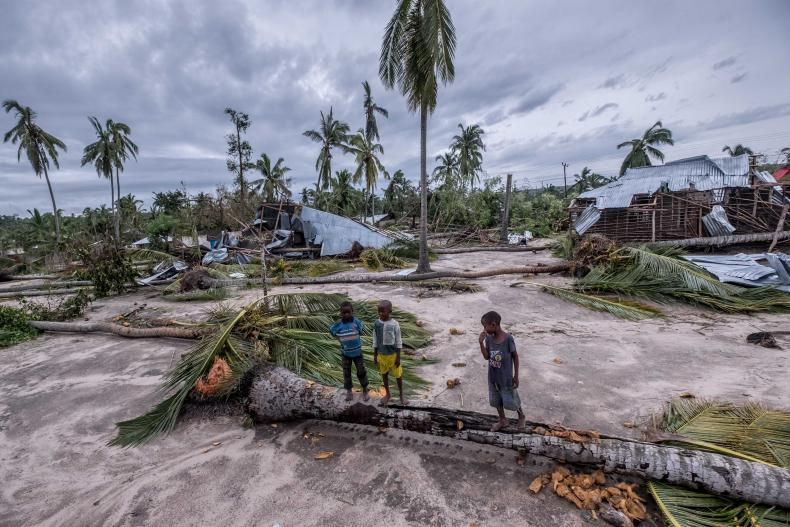
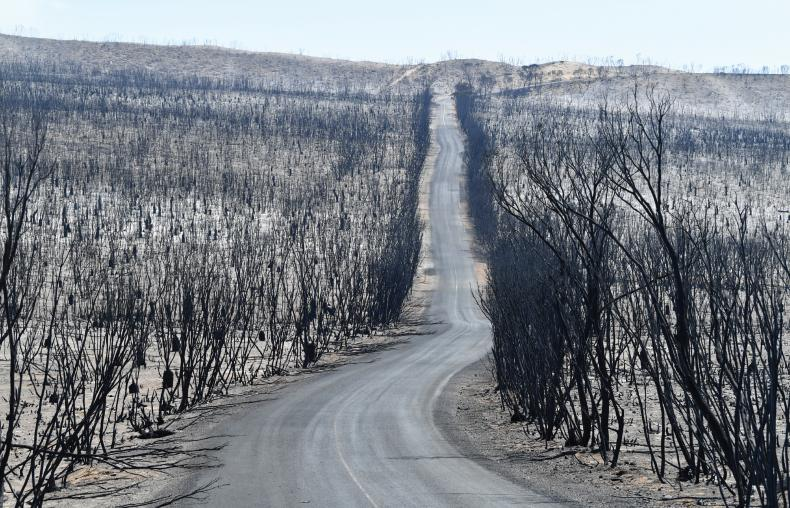
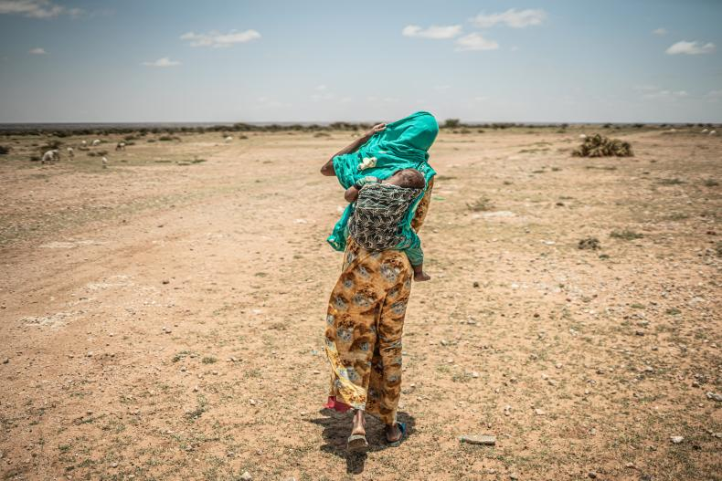
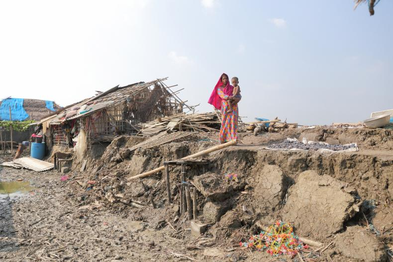
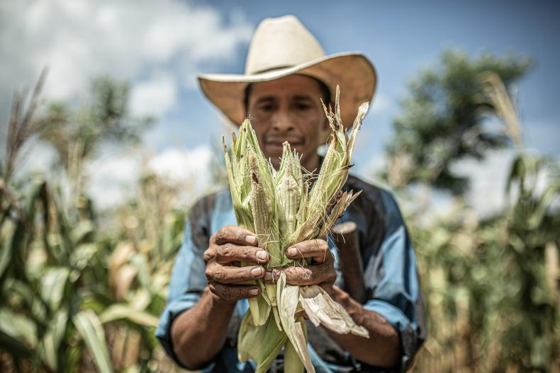

Ciclón Indai
En marzo de 2019, el ciclón Idai se cobró la vida de más de 1000 personas en Zimbabue, Malawi y Mozambique, y tuvo consecuencias devastadoras para millones de personas más que se quedaron sin alimentos o acceso a servicios básicos. Los letales corrimientos de tierra arrasaron casas, cultivos e infraestructuras. Tan solo seis semanas más tarde, el ciclón Kenneth asoló el norte de Mozambique, llegando a zonas donde nunca se habían observado ciclones tropicales desde que estos se monitorizan por satélite. (Foto: Tommy Trenchard/Oxfam)
Incendios en Australia
Australia recibió el año 2020 entre los peores incendios jamás registrados, después de que 2019 fuese el año más caluroso registrado hasta el momento, dejando la tierra y otros elementos combustibles extremadamente secos. Los incendios han calcinado más de 10 millones de hectáreas, causando la muerte de al menos 28 personas, arrasando comunidades enteras, destrozando los hogares de miles de familias y dejando a millones de personas bajo una peligrosa nube de humo. Más de mil millones de animales salvajes han muerto, y algunas especies y ecosistemas jamás se recuperarán. (Foto: Oxfam)
Sequía en África oriental
El aumento de las temperaturas del mar, ligado al cambio climático, ha duplicado la probabilidad de que se produzcan sequías en la región del Cuerno de África. Las graves sequías de 2011, 2017 y 2019 han devastado los cultivos y el ganado repetidamente, empujando a 15 millones de personas en Etiopía, Kenia y Somalia a una crisis humanitaria. Sin embargo, el llamamiento humanitario tan solo ha recibido el 35% de los fondos solicitados. Numerosas personas se han quedado sin medios para conseguir alimentos y se han visto obligadas a abandonar sus hogares. Millones de personas sufren escasez de agua y alimentos.(Foto: Pablo Tosco/Oxfam)
Inundaciones en el sur de Asia
Durante el último año, las inundaciones y corrimientos de tierra han obligado a 12 millones de personas a dejar sus hogares en la India, Nepal y Bangladesh. Hace tan solo dos años, las excepcionalmente intensas lluvias monzónicas y las graves inundaciones devastaron las vidas de numerosas personas en estos mismos países. En algunos lugares, las inundaciones fueron las peores en casi 30 años. Un tercio de Bangladesh quedó sumergido bajo el agua. Aunque se esperan ciertas inundaciones durante la época del Monzón, la comunidad científica afirma que las lluvias monzónicas se han intensificado en la región como consecuencia del aumento de las temperaturas de la superficie del mar en el sur de Asia. (Foto: Fabeha Monir/Oxfam)
Corredor seco de América Central
El fenómeno meteorológico de El Niño, exacerbado por la crisis climática, ha provocado que 2019 haya sido el sexto año consecutivo de sequía en el corredor seco de América Central. En Guatemala, Honduras, El Salvador y Nicaragua la habitual temporada seca de tres meses dura ahora seis meses, o incluso más. La mayoría de los cultivos se han malogrado, dejando necesitadas de ayuda humanitaria a 3,5 millones de personas que dependen de la agricultura para obtener alimentos e ingresos, así como a 2,5 millones de personas en situación de inseguridad alimentaria. (Foto: Pablo Tosco/Oxfam)